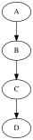

ARBRES⚓︎
Structures arborescentes⚓︎
La structure de liste chaînée rencontrée précédemment est intéressante lorsqu'on a besoin d'un accès séquentiel aux éléments. En revanche, elle est peu adaptée à des accès arbitraires. Dans ce cas de figure, une structure arborescente peut être envisagée. Il s'agit d'une autre famille de structures chaînées qui permet d'organiser les informations stockées de manière hiérarchique. Les applications sont très nombreuses; on peut citer par exemple:
- arborescence du système de fichier d'un ordinateur;
- expression arithmétique;
- structure des pages web;
- arbre généalogique;
- etc.
Arbres binaires⚓︎
Définitions⚓︎
Un arbre est une structure arborescente particulière, composée de noeuds. Dans un arbre binaire chaque noeud présente au maximum 2 branches.

Un arbre qui ne comporte pas de noeud est un arbre vide. Si l'arbre n'est pas vide, il comporte:
- un noeud particulier appelé racine;
- deux sous ensembles de noeuds appelés sous arbre gauche et sous arbre droit.
Remarque: la racine est reliée à la racine des sous arbres (sauf s'il est vide).
Un noeud qui a deux sous arbres vides est une feuille.
Dans l'exemple ci-dessus:
Aest la racine;D,EetFsont des feuilles.
La taille \(N\) d'un arbre correspond au nombre de noeuds. Par exemple, la taille de l'arbre présenté en introduction est \(N=6\).
La hauteur \(h\) d'un arbre correspond au nombre maximal de noeuds rencontrés en descendant de la racine à une feuille. Par exemple, l'arbre présenté en introduction a une hauteur \(h=3\).
Encadrement de la taille⚓︎
La taille d'un arbre vérifie une double inégalité:
La borne inférieure correspond à un arbre dont chaque noeud ne présente qu'une branche, dans ce cas \(N = h\) (Fig. 1). La borne supérieure correspond à un arbre où chaque niveau est complet, dans ce cas \(N=2^{h}-1\) (Fig. 2).
 (Fig. 1)  (Fig. 2)
(Fig. 2)
Une représentation possible en python⚓︎
Utilisation d'une classe⚓︎
De la même façon qu'on a construit les listes chaînées avec des cellules, on va utiliser une classe Noeud pour décrire un arbre. Un noeud comporte une information ou valeur, une référence vers le sous arbre gauche et une référence vers le sous arbre droit.
1 2 3 4 5 6 7 | |
Ainsi, l'arbre donné en introduction peut être codé de la manière suivante:
1 2 3 4 | |
1 2 | |
1 2 | |
Taille et hauteur⚓︎
La taille d'un arbre vide vaut 0. S'il n'est pas vide, sa taille est:
1 (racine) + taille sous arbre gauche + taille sous arbre droit
Une telle présentation incite à écrire une fonction récursive. Coder cette fonction.
1 2 3 4 5 6 7 | |
1 | |
La hauteur d'un arbre vide est nulle. Si l'arbre n'est pas vide, sa hauteur vaut:
Coder une fonction récursive qui renvoie la hauteur d'un arbre passé en paramètre.
1 2 3 4 5 6 7 | |
1 | |
1 | |
Parcours d'un arbre en profondeur d'abord⚓︎
Dans quel ordre parcourir les noeuds d'un arbre? Il existe plusieurs possibilités:
- si on traite d'abord la racine, puis le sous arbre gauche, puis le sous arbre droit, l'ordre est dit préfixe;
- si on traite d'abord le sous arbre gauche, puis la racine, puis le sous arbre droit, l'ordre est dit infixe;
- si on traite d'abord le sous arbre gauche, puis le sous arbre droit, puis la racine, l'ordre est dit postfixe ou suffixe.
1 2 3 4 5 6 7 8 9 | |
1 | |
1 | |
1 2 3 4 5 6 7 8 9 | |
1 | |
1 | |
Ecrire la fonction qui renvoie le parcours postfixe d'un arbre.
1 2 | |
1 2 3 4 5 6 7 8 9 10 11 12 | |
Parcours en largeur d'abord⚓︎
Ce parcours est moins trivial que le précédent. Il s'agit de parcourir l'arbre par niveau. On commence par la racine puis les racines de ses deux sous arbres et ainsi de suite. Une structure de données adaptée à ce problème est la file.
Description d'un algorithme itératif
On suppose l'arbre non vide.
- on enfile l'arbre;
-
tant que la file n'est pas vide:
- on défile un élément (en fait un arbre);
- on affiche la valeur de sa racine;
- on enfile ses deux sous arbres s'ils ne sont pas vides
À faire
Compléter la fonction parcours_largeur puis tester.
1 2 3 4 5 6 7 8 9 10 11 12 13 14 15 16 17 | |